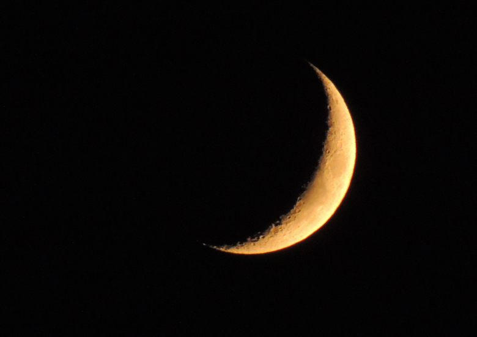
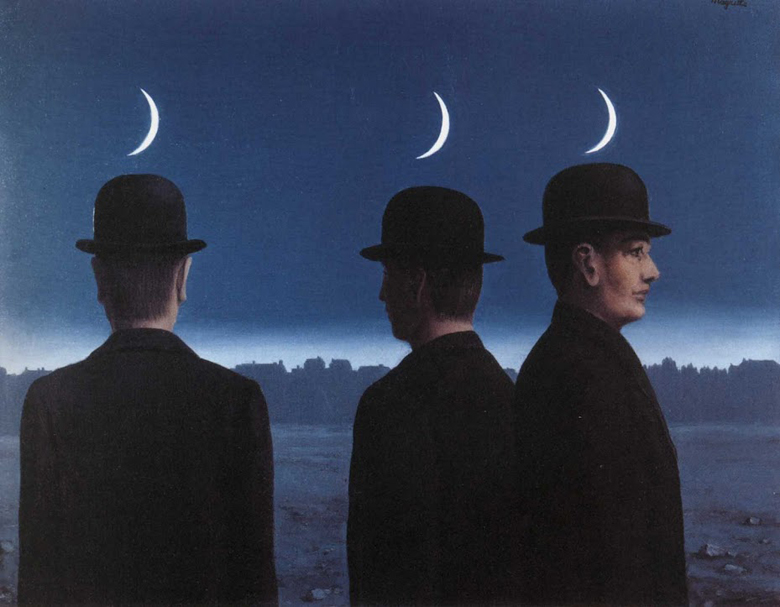
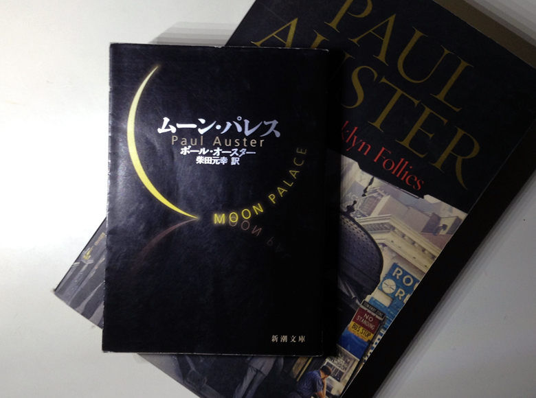
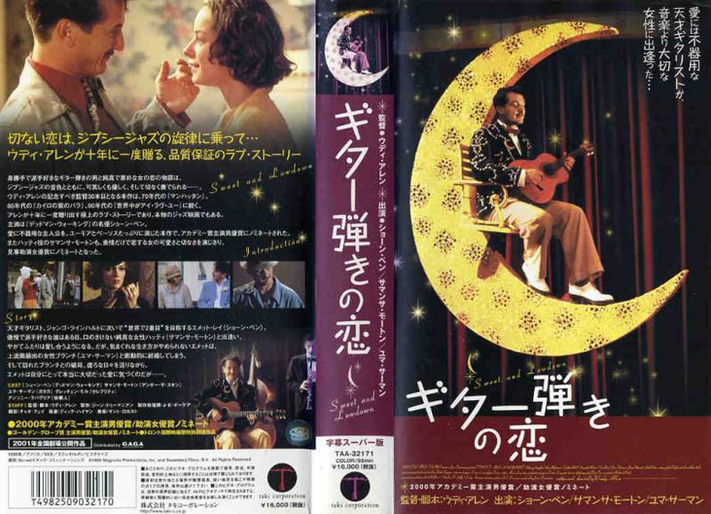
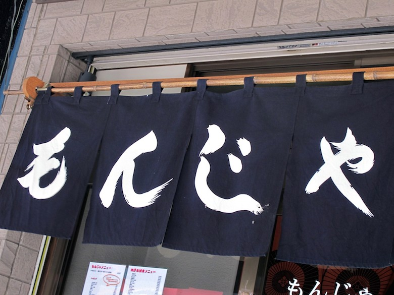

プロフィール
名前(My Name)
ドアン スアン トウ
職業(My Job)
エンジニア
趣味(My Hobby)
サッカーをすること、旅行 デザインを作ります。
好きな言葉(My favorite word)
"宜しくお願い致します"。
私の好きなもの1(My Favorite things1)
私の好きな物は、1です。その説明文。
私の好きなもの2(My Favorite things2)
私の好きな物は、2です。その説明文。
私の好きなもの3(My Favorite things3)
私の好きな物は、3です。その説明文。
私の好きなもの4(My Favorite things4)
私の好きな物は、4です。その説明文。
私の好きなもの5(My Favorite things5)
私の好きな物は、5です。その説明文。